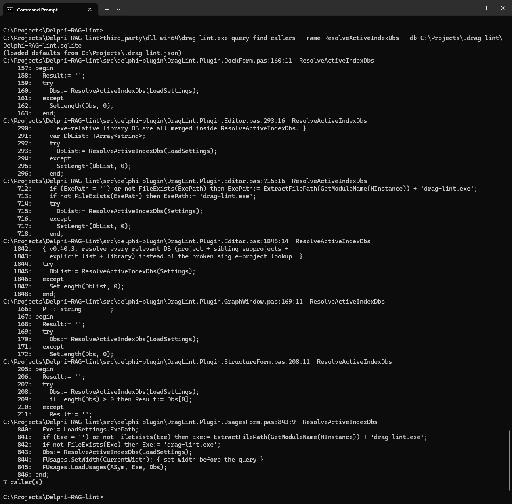
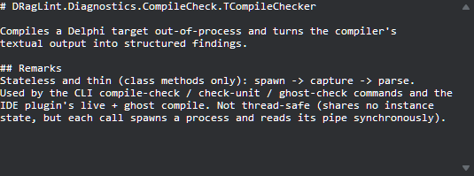
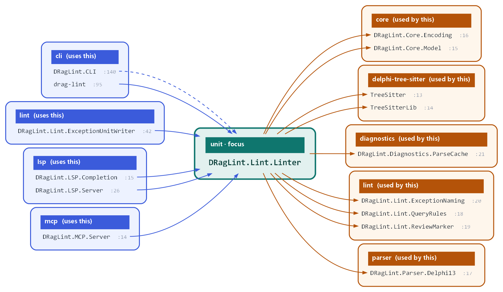
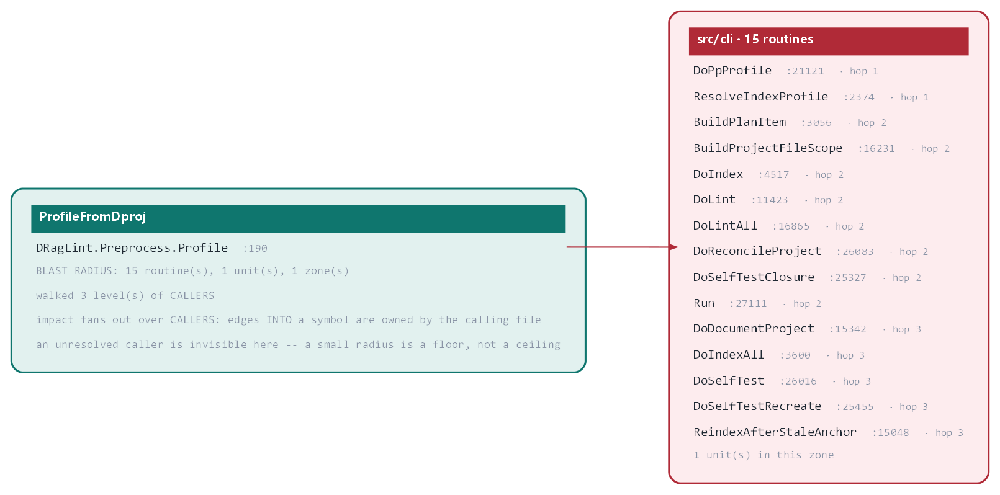

DL parses every unit you have. It doesn't just search the text. It builds a platform library index from your Delphi library and browsing paths, then a project index for each project. Everything it does after that is deterministic and works offline, on facts it already holds.
Offline means your code stays on your machine. DL needs no cloud service, no account and no API key. Indexing, queries, lint, reports and fixes all run locally against the two indexes, and they work on a machine with no network connection at all, so DL fits air-gapped and regulated environments. The same question always gets the same answer, because it comes from parsed facts, not from a model’s guess.
No AI runs inside DL: it is AI-ready, not AI-dependent. It speaks MCP and LSP over local stdio, so an AI assistant or an editor you already use can ask it questions. That makes the assistant far better: it replaces grep with exact answers, so the assistant spends seconds and a few tokens where it used to spend minutes and many.

Symbols, callers and callees, the unit to add to uses, any message, caption or SQL text across .pas, .dfm and .sql.
{{fact:categories}} categories, from bug patterns to security and FireDAC. {{fact:fixable}} rules can fix the code for you. Counts {{fact:asOf}}.

Documents your code with more than the IDE can tell you.

Dependencies, call butterflies, change impact: as charts and as text.

What a change would break, and the call path between two routines.
Across the whole project, not one file at a time.
drag-lint lsp, standard protocol.drag-lint serve: an MCP server.We build DL alongside HTR Micronite, our quality and production-control software for manufacturers, and we use it throughout Micronite’s development: every index, rule and report on this page has run on a large, real Delphi code base before it reached you.